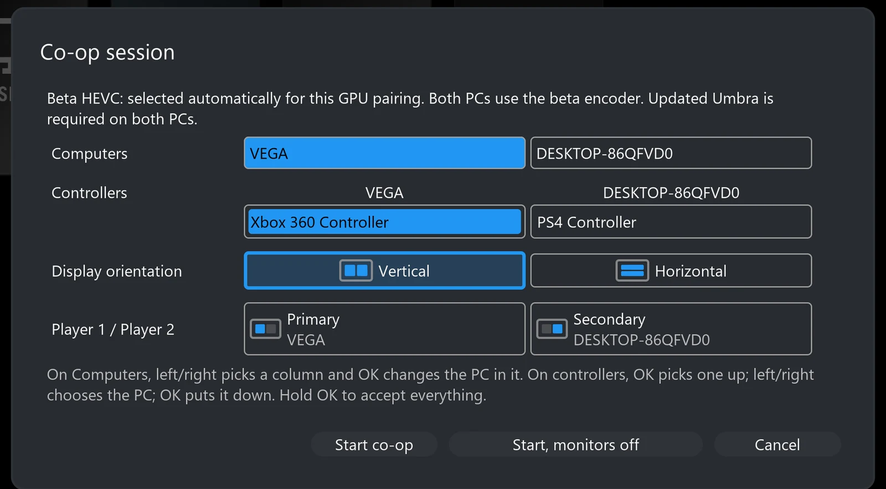
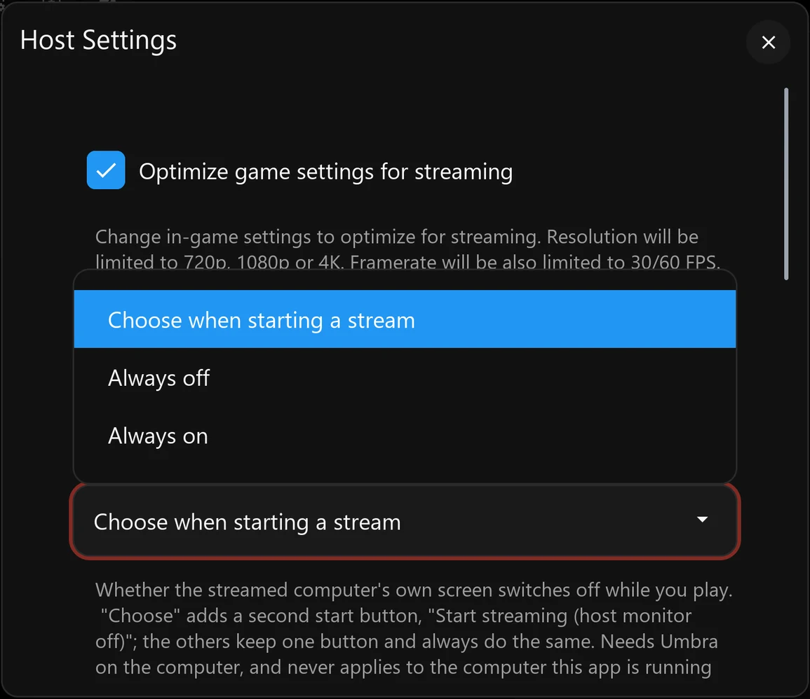
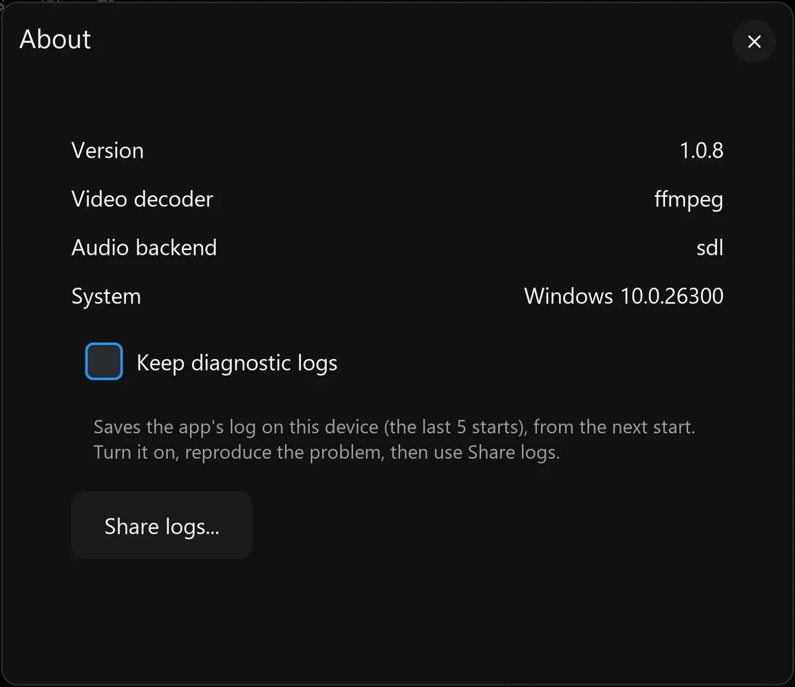

Eclipse is the client and Umbra is the Windows host. Use them for familiar one-PC remote game streaming—or combine two independent PCs into one side-by-side or stacked couch co-op view.
Moonlight is a client: it receives video and audio and sends your controls back. Sunshine is a host: it captures and encodes a gaming PC’s output. Games still run on your own hardware; this is not a cloud-game subscription or a game library.
Eclipse follows Moonlight → Moonlight TV → Aurora. Umbra follows Sunshine → Apollo: it is Apollo with the additions Eclipse needs for co-op, keeping other changes to a minimum. Apollo’s everyday host functionality remains the foundation. How Umbra follows Apollo.
What you need
One Windows gaming PC running Umbra; two for two-host co-op.
Eclipse on an LG webOS TV, Windows x64 PC or Linux x86_64 desktop.
A reachable home network, ideally wired, plus controllers or keyboard/mouse.
Your games installed on each host and any accounts the games require.
You do not need a second client for the second player. A separate device hub is optional, not part of the standard installation.
Two PCs do not turn one single-player game into a shared multiplayer world. Each PC runs an independent session; the game itself decides whether those sessions can play together online or over a LAN.
The complete streaming stack
Start with one host. Add a second when the couch fills up.
Co-op is the defining addition, not a replacement for standard game streaming. Eclipse and Umbra retain the normal host pairing, app launching, video, audio and input experience expected from their Moonlight/Sunshine lineage.
Standard streaming
One host → one client
Pair Eclipse with Umbra, choose a game or desktop, and stream to the TV or desktop client. Configure resolution, frame rate, bitrate, codec, HDR, audio and input according to the capabilities of the client, host and network.
Remote game and desktop launch
H.264 and HEVC; AV1 on compatible webOS paths, HDR where supported
Gamepads, keyboard and mouse
Performance overlay and session diagnostics
Two-host co-op
What co-op means here
Choose two paired Umbra PCs. Eclipse receives both live sessions, places them side by side or stacked, and routes each player's assigned controls to the correct host.
Two independently rendered games
Side-by-side or top-and-bottom layouts
Explicit Player 1 and input ownership
Automatic compatible encoder selection
Features · foundation and additions
Familiar streaming. More ways to play together.
The everyday capabilities come from Moonlight, Sunshine, Moonlight TV, Aurora and Apollo. Eclipse/Umbra builds on that work with coordinated two-host play, device routing and practical improvements. Expand a group for the details.
The streaming foundation we keep
Inherited foundation
Your PC, remotely
Discover or add a host, pair with a PIN, browse its apps and launch a game or desktop. Video and audio come to Eclipse; your input goes back to the PC. Apollo supplies Umbra’s browser-based host configuration, app management, on-demand virtual displays and per-client permissions.
Inherited foundation
Control picture and sound
Choose resolution, frame rate, bitrate, codec and audio options to suit your connection. H.264 and HEVC are available on current desktop paths; compatible webOS paths can expose AV1 and HDR. Availability is hardware-dependent, not a promise that every combination is tested. Ordinary streaming retains compatible stereo/surround options and stream statistics.
Inherited foundation
Use the controls you have
Gamepads, keyboard, mouse, an on-screen keyboard and a gamepad-controlled virtual mouse remain part of the client experience. Rumble, gyro, touchpad and other controller features depend on the device and platform. Apollo’s host permissions, text-clipboard support and automation hooks are retained; individual client support still matters.
Two independent PCs, one shared viewBoth layouts, automatic desktops and compatible encoding
Side-by-side or stacked co-op
Choose two paired Umbra PCs and a layout. Each PC runs its own game and sends its own pane; Eclipse combines the compatible HEVC picture data before decoding the shared view. Neither game needs native split-screen support. This does not add multiplayer to a single-player game: joining the same world still depends on the games and accounts.
Desktops that fit their panes
Eclipse requests Umbra’s built-in Co-op Pane at the required size. Windows sees a pane-sized virtual desktop, rather than having half of a full desktop cut off. The pane is managed by the co-op session and normally hidden from ordinary app editing. You should not need to create an application or change hidden host settings.
Pair-aware encoder selection
Known NVIDIA pairs use the native HEVC route. For supported mixed NVIDIA/AMD pairings, both hosts use the custom GPU HEVC path so their encoded structures match. The AMD/AMD selection path also exists, but two physical AMD hosts have not been tested on the project rig. Required encoder components must be included on both hosts; Intel co-op remains unverified.
One co-op session to manageA shared bandwidth budget, pause, resume and quit
One total video bitrate
By default, Eclipse divides the selected video bitrate between the two hosts instead of requesting the full amount from each. Your normal quality setting therefore describes the combined video budget. Actual network traffic also includes audio, protocol overhead and recovery traffic.
Disconnect to pause; Quit to finish
Disconnect preserves a resumable two-host session. Returning to co-op reconnects to those desktops; changing orientation on resume rebuilds the pane displays. Quit game is the separate action that ends both host applications. Resume has been exercised on Windows and Linux; the end-both-hosts check has been recorded on Linux and Windows, with broader packaged-platform checks still needed.
Disconnect from the stream overlay leaves both PCs’ sessions running: the Co-op Pane tile stays live, and choosing Resume streaming on it reconnects both. Quit game then ends both. Eclipse on Windows with two Umbra PCs.
More useful launch failures
A busy host is identified so you can resolve its existing session. If the client lacks launch permission, the message directs you to the host’s Clients settings rather than leaving you with an unexplained permission error.
Controls go to the right PCRemembered controllers, pane-aware pointing and Nintendo layouts
Named, remembered controller assignments
The co-op launch screen and Settings → Co-op let you place controllers under the PC they should control. Assignments are remembered, unclaimed controllers can be distributed, and previously seen disconnected pads remain manageable. Forgetting a controller clears its saved assignments. A controller physically attached to a host is not automatically movable through client forwarding.

Each controller listed by name under the PC it will control. Shown with two virtual controllers emulated on the client PC.
Mouse and keyboard routing
Pane-aware pointer routing translates coordinates into the target desktop. A drag stays with the PC where the button was pressed, and a key release returns to the PC that received its press. You can instead choose “Assign mouse and keyboard like controllers” to pin devices to a PC for the session. Relative/gamepad virtual-mouse input is a separate path; it should not be assumed to follow hover. Windows routing has recorded tests; TV coverage is less complete.
One mouse, two PCs: moving across the middle line hands the pointer to the other PC, whose own cursor appears at the matching edge. A right-click opens each PC’s own desktop menu in its half.
Nintendo buttons, without remapping every pad
Detected Switch Pro/Joy-Con controllers can follow their printed A/B/X/Y labels or Xbox-style physical positions. Other controllers keep their normal mapping. Recognition is device-dependent, so untested third-party pads may need a report.
Remotes do not take the first gamepad slot
Recognised TV/media remotes are excluded from webOS game-controller allocation. On desktop platforms, remote-like devices are placed in higher slots so ordinary gamepads get the low player slots.
Two games, with sound you controlStereo mixing, speaker restoration and shared sounds played once
Mix both PCs or listen to one
Co-op receives stereo audio from each host. Play the shared mix through the client’s output, or select one player’s sound. An advanced buffer setting trades tolerance of uneven arrival for added delay. Co-op’s stereo mixer is separate from the inherited surround options for ordinary streaming.
Return the host to its real speakers
Umbra remembers the playback endpoint before switching to streaming audio and restores it after the session. Recovery also handles a display’s audio device returning late or being recreated by Windows under a different identity, reducing the chance of a PC being left on silent virtual speakers.
Play shared sounds once
When both games play the same narration, music or effect, Eclipse’s passive gate compares the two PCs’ sound in six frequency bands and mutes the later copy in each band where the two match, so you hear the sound once. It is on by default and can be switched off in the co-op settings. While a band is muted, anything else the later PC plays in that band is muted with it for that moment, and once the gate has heard enough shared sound it evens out the two PCs’ volumes, by up to 6 dB each. To compare each piece of sound before it plays, the gate holds both PCs’ sound back by 5 ms (240 samples at 48 kHz). Eclipse never makes the picture wait for the sound: on the TV, sound and picture are each time-stamped at the moment they are handed to the player, and on Windows and Linux the video path takes no timing from audio. Player 2’s sound (the PC chosen as Player 2 in the co-op dialog) already fills a 40 ms buffer before it plays, to even out network timing, so 5 ms more is small beside it; for Player 1 the 5 ms is the only delay the mix adds, under a third of a frame at 60 fps. Nothing extra is held back when the setting is off or when you listen to one PC only. In simulator tests built on recorded game audio, copies of ordinary speech were turned down about 23 dB, whispers and breaths only about 3–7 dB, and copies playing 0.5–2% slower about 1.5–4.7 dB.
Fit the setup you actually useLocal-host play, monitor control, wired TV networking and desktop usability
A Windows PC can be a host and the client
Run a game on its own virtual display while Eclipse shows the combined view on a separate display. Cursor and focus hand-off support controlling that local pane without feeding input back into Eclipse. Keep the client off the display being captured. Local controller isolation is not universally solved, especially when other software already holds a controller open.
Choose what happens to remote monitors
Settings → Host → Computer’s monitor while streaming offers ask at start, always off or always on. The launch prompt can start co-op with remote monitors off, without switching off the screen of the PC running Eclipse. Requires Umbra support; recorded verification is on Windows, with TV-side coverage still needed.

Prefer the TV’s wired adapter
On webOS, the wired-network option identifies the active USB Ethernet adapter and asks a capable Umbra host to direct the session over that connection. Automatic mode uses the extension only when the host advertises it. Wi-Fi need not be disabled; this is not a guarantee for every adapter chipset.
A more usable desktop client
Keyboard shortcuts cover fullscreen, capture and stream controls; Windows remembers window position, size and maximisation. Settings can scroll instead of compressing their text into an unreadable panel.
Reports that explain what went wrongClient and host evidence, crash records and shareable bundles
Keep diagnostic logs, then Share logs
Enable logging in Settings → About, reproduce the issue and export a report. It includes build identity, platform capabilities, session statistics, settings, second-host information and logs from a capable Umbra host, rather than asking you to find each file separately.

Export from the device you are using
Windows saves a local bundle. Linux can also provide a temporary network download page, and webOS lets a phone or PC retrieve the report over the LAN. Crash, frozen-interface and unclean-exit records preserve useful evidence for the next start; they do not automatically repair the fault.
Known secret fields are redacted, but device names and network addresses can remain. Review a bundle before posting it publicly. A TV app that cannot stay open cannot serve its download page.
Want the implementation details? The Development guide covers composition, reference-frame holds, buffering, build pipelines and the experiments that shaped them.
Gameplay showcase
See both modes in one continuous run.
An ordinary game stream, then two independent games sharing one display.
ONE-PC STREAMCO-OP · PLAYER 1CO-OP · PLAYER 2
Video placeholderStandard streaming → co-op → both layoutsRecord 45–60 seconds full screen on the PC client: an ordinary Halo stream, then co-op with two separate Halo games and isolated player controls in both layouts. Record at the actual display frame rate. Export MP4/WebM with a poster frame.
System map · why they are paired
Cross-vendor co-op needs both ends of the connection.
Two independently encoded streams cannot always be joined safely when the hosts use different GPU vendors. Eclipse and Umbra are developed together so the client can request a compatible co-op mode and the host can use the custom encoder path and stream contract it requires.
Gaming PCsUmbra hosts
Capture each game, choose a compatible hardware or custom co-op encoder, and send two independent sessions.
→
Shared displayEclipse client
Negotiates the co-op contract, composes the panes, mixes or selects audio, and keeps input ownership separate.
→
PlayersOne couch
Each player controls their own PC while both games appear on one television or desktop display.
The work was kept as a coordinated client-and-host project because broad co-op compatibility required changes on both sides. Anyone is welcome to adapt the functionality for Aurora, Apollo, or any other Moonlight/Sunshine fork.
Current status
What has been tested—and what still needs your hardware.
The table separates working targets from combinations that have actually been exercised. A supported code path is not the same as a promise that every TV, OS, GPU and driver combination has been verified.
Compatibility and test coverage as of October 2026
Area
Tested hardware / software
Result
Coverage gap
LG webOS client
LG G5, webOS 26 (11.2.0 / firmware 43.21.77), wired through a UE300 USB Ethernet adapter
Tested Standard streaming and the two-host co-op path run on the project television.
Other LG models, SoCs, decoder combinations and earlier/later webOS releases need community testing.
Windows client
Windows 11 x64 on the Radeon RX Vega test PC; D3D11VA hardware decode
Tested Standard and co-op sessions, diagnostics and recovery have been exercised.
Windows 10, Windows on ARM, Intel-only clients, other GPU generations and broader decoder/driver combinations remain unverified.
Linux client
x86_64 Ubuntu 22.04/26.04, Fedora 44 and Arch environments under WSL; NVIDIA NVDEC
Tested Single-host/co-op streaming and diagnostics exercised under WSL; this is not native-Linux certification.
Bare-metal Linux and native AMD/Intel VAAPI remain unverified. Experimental WSL VAAPI tests showed crashes and visual faults.
Umbra hosts
Windows 11 x64; NVIDIA RTX 4070, NVIDIA RTX 3070 and AMD Radeon RX Vega systems
Tested Single-host streaming and host diagnostics work across the project systems.
Windows 10, Windows Server, Windows on ARM, Intel Arc/iGPU hosts and newer AMD generations need coverage.
NVIDIA + NVIDIA co-op
RTX 4070 + RTX 3070, Windows 11; 10-bit HEVC/HDR path
Measured Two-host co-op has been used and measured on the primary rig.
Other NVIDIA architectures, driver branches, resolutions and refresh rates need reports.
Measured Live mixed-vendor co-op has been demonstrated.
Fast-motion image quality and high-bitrate stability remain active work. Newer AMD encoders, HDR and longer sessions need coverage.
AMD + AMD co-op
No second AMD host is available on the project rig
Needs testing The code path exists but this pairing has not been run on two physical AMD hosts.
AMD × AMD is a priority community test, especially RDNA-era GPUs and HDR-capable hardware.
Intel and mixed Intel co-op
No representative Intel host pair in the project rig
Needs testing Standard host encoder support does not establish Intel co-op support. These co-op combinations are not verified.
Intel × Intel, Intel × NVIDIA and Intel × AMD reports are needed.
Your setup is useful evidence
Try it outside the tested matrix.
If something fails, open an Eclipse or Umbra issue—or reply in the project’s community thread—with the exact OS, GPU, driver, client and display. Eclipse’s Share logs feature packages system capabilities, settings, session events, performance totals, host logs and crash or unclean-exit records so a report can be investigated without guesswork. Review the bundle for personal information before attaching it.
The useful history includes the dead ends. These are dated outcomes from project records, not fresh reproductions of every experiment. Credit is attached to documented contributions; where the record does not establish who first proposed an idea, the account does not invent an author. The detailed history goes a level deeper, step by step.
22–30 July · Finding the core pathDual decoding, the half-stream proposal and the header-alignment breakthrough
22 July · Building on existing clients and hosts
The Eclipse modification record begins with Aurora and Moonlight TV, rather than a new client from scratch. The goal was two independently running PCs on one TV while retaining normal streaming. Sunshine and Apollo provided the host foundation.
25–30 July · Two decoders were not a complete display solution
Early probes appeared to grant a second decoder, then suggested only one was usable. Further AI-led investigation corrected that conclusion: two decoders could survive together at a smaller combined workload. The unresolved obstacle was obtaining two usable native-app display/sink paths. The outcome was not “LG TVs physically have one decoder”; it was that this route did not yield the required composition/display solution.
28 July · PreceptorOfMagic proposes joining halves before decoding
The pivotal suggestion was for each PC to send its own half-picture and for the client to join the two into one decodable picture. Both PCs would keep their direct connection to the TV, without relaying one through the other. AI implementation first proved compatible-slice splicing from full-size source streams; true pane-sized host desktops followed.
28–30 July · Cropping is not a half-sized desktop
Early versions selected regions of full-resolution desktops and used blanking overlays. PreceptorOfMagic noticed the missing taskbar and pushed for Windows itself to see the pane-sized desktop. The implementation moved to half-height encoding, rewritten composite dimensions and relocated slice data, so the game and desktop could fit the visible pane.
29 July · A misleading codec error turns out to be bit alignment
Inserting a slice address shifted the header length and displaced entropy-coded payload, producing apparent QP/decode errors. AI diagnosis and implementation repaired complete-header parsing and byte alignment before copying the original payload. Component decoding then validated the rewrite. That was a structural proof, not yet proof of sustained live co-op.
Late July–August · Learning to preserve time and referencesGhosting, role reversal, queues, holds and corrected measurements
Late July–early August · A still pane is not a reusable packet
Predictive pictures exposed why arbitrary drops or repeats were unsafe. Reapplying residuals could corrupt a held pane, while omitting a reference picture broke later prediction. Sequence tracking, bounded buffering, bootstrap/keyframe handling and synthetic all-skip holds became core architecture rather than optional smoothing.
3–4 August · Swapping primary hosts changes the fault
User observations during role swapping exposed a scheduling asymmetry: a slower or static primary did not drain a faster peer often enough. A deeper queue stored increasingly old content; high host floors produced more duplicates. The design direction changed to an independent composite picture count and extra catch-up pictures that advance the queued pane while safely holding the other. The initial design note was not itself an implementation result; current code supplies the bounded catch-up paths described above.
Early August · AI conclusions needed retraction, not decoration
Some apparently successful tests had invalid inputs; a separate frame-extraction error made a correct hold look degraded. Fresh live capture and frame-accurate comparison reversed those findings. The improvement was methodological as well as technical: verify the actual input, the displayed picture and the effect of a setting instead of accepting healthy counters or a plausible explanation.
Late August–16 September · The cross-vendor detourNative HEVC mismatch, the abandoned AVC route and a shared encoder
30 August · Healthy counters, wrong picture
The investigated NVIDIA HEVC output used 32×32 coding-tree blocks while the AMD native output used 64×64. Their pane data could not simply share one composite picture’s structures. This explained a grey peer pane despite apparently healthy receive/decode counters. The finding applied to those native outputs, not to all possible AMD/NVIDIA co-op.
Late August–15 September · AVC was explored, not casually dismissed
AVC’s fixed macroblock geometry offered a way around the HEVC block-size mismatch. A small side-by-side proof worked, but target-size composition met the tested NVIDIA encoder’s slice-count ceiling. Other parameter-compatibility and presentation problems followed. Later live controls showed stale content even without AMD or synthetic holds, invalidating explanations that blamed those alone.
The experimental co-op AVC route was retired on 16 September. The lesson was not that AVC can never express this layout, nor a universal decoder frame-rate limit. This implementation path did not meet the target constraints.
15–16 September · Keep the direct architecture; control both encoders
AI audits of vendor APIs and existing implementations did not produce a small native compatibility fix. With the user’s direct-host/no-relay requirement intact, work returned to HEVC: keep the established native NVIDIA-pair route, and use a shared programmable encoder on both hosts for affected pairings. Host prediction and client composition stayed separate responsibilities. This solution builds on upstream codec work, including x265.
16–29 September · Correct bytes were only the startParallel CABAC, integration failures, quality work and rollbacks
16 September · An AI algorithmic contribution changes the GPU path
A correct but largely serial GPU CABAC port took tens to hundreds of milliseconds in component tests. The AI-developed context-grouping and finite-state-scan approach changed the algorithm rather than merely tuning that serial port. Predicted-frame CABAC fixtures reached roughly 1–2 ms with exact reference bytes. This was meaningful component progress, not an end-to-end latency claim.
16–18 September · Integrating a real encoder exposes new failures
Residual coding, transforms, quantisation, reconstruction, budgeting and live host capture were brought together. Tests then found capture-size mismatches, rough fine detail, stacked-layout failures, bitrate bursts and quantisation limits. PreceptorOfMagic rejected a special fixed frame-size ceiling; subsequent work returned budgeting to the requested bitrate and improved adaptive quantisation. Direction-setting and implementation both mattered.
17–29 September · Roll back a regression, keep the remaining problem visible
An extra quantisation attempt in one revision raised worst-case encode time and produced visible hopping. Rolling it back removed that symptom. Later lowering the QP floor improved some light static, but motion-related QP jumps remained in both older and newer versions. Cross-vendor composition had become real; native-encoder quality and performance parity had not been established.
Late September–October · Making it usable and maintainableDesktop clients, a firmware crash, automatic setup and the thin Apollo fork
Late September · Desktop clients and session recovery
Windows and Linux client work exercised mixed-vendor co-op beyond the TV. Packaging moved toward a portable Linux baseline and staged Windows dependencies. Local-host input/focus, resume, audio-endpoint restoration and shareable diagnostic bundles addressed everyday failures around the stream itself. WSL and container coverage remained distinct from native Linux driver validation.
26 September · A firmware update exposes a symbol collision
On webOS 26, first-stream media-plugin scanning resolved a library call to the application’s exported g_log data symbol. AI-led diagnosis identified that collision; renaming the symbol and adding a post-link export guard addressed the specific crash. The new test lesson was to exercise first use after install/firmware changes, not only repeated launches. This did not close every unrelated stream-start fault.
Late September–3 October · Co-op becomes a coordinated launch
The built-in pane, capability-based encoder selection and divided default bitrate replaced manual host edits. Resume and Quit gained two-host semantics. Umbra’s branding and changes were then isolated into a smaller Apollo delta, preserving upstream documentation, translations and maintained everyday functionality instead of duplicating them.
Early October · Smaller features and the passive audio gate
Remote-monitor choices, remembered input assignments, Nintendo mapping, remote-device filtering, wired-TV routing and richer logs made the app fit more real setups. Duplicate-audio work explored several filtering strategies before settling on a passive gate, now the default way shared sounds are played once.
Client
Eclipse
Install on the television or computer where you want to play. Pair it with one Umbra host for regular streaming or two for co-op.
Install on each Windows gaming PC. Apollo supplies the everyday host experience; Umbra keeps other changes to a minimum while adding the encoder and session behaviour required by Eclipse co-op.
Yes. Regular streaming is a first-class mode: pair, choose an app, play. Resolution, frame rate, bitrate, codec, audio and input remain configurable. Hardware capabilities determine available codecs, HDR and performance.
Do I need Umbra for co-op?
Use matching Eclipse and Umbra releases on both hosts for the coordinated co-op mode. Regular Moonlight-compatible streaming does not imply that another host supports the custom co-op encoder contract.
Does it cost anything?
The project is free and open source. You provide the gaming PCs, display, network and games.
What does a working result mean?
The status table records the project’s actual rigs, not a guarantee across all hardware. At high resolutions Windows frame readback can limit presentation, and custom-encoder motion quality is still being improved. Start with a normal stream and report your exact setup.